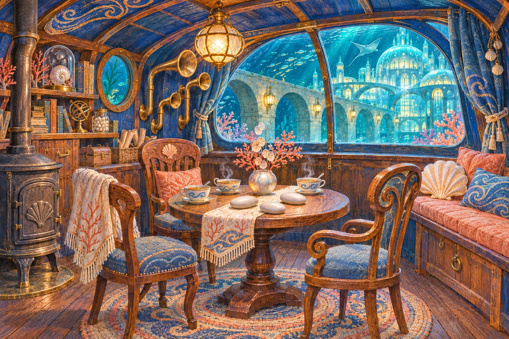

Город, который хочется исследовать
Коралловый сад, рынок под парусами, театр осьминога и огромная раковина Наутилуса. Внутри сводов сухо, светло и полно жизни.

Город под морем готовится услышать свою первую песню. Но знаменитое сокровище молчит — и трое друзей замечают то, чего не увидели хранители.
Коралловый сад, рынок под парусами, театр осьминога и огромная раковина Наутилуса. Внутри сводов сухо, светло и полно жизни.

Заметить, придумать, договориться, помочь руками. В общей сцене найдётся отдельное решение для каждого.

Проверяйте свидетельства, меняйте маршрут и придумывайте план. Найденный ответ останется вашим успехом.
Ведущему достаточно начать с подготовки в книге и первого вечера. Игрокам покажите страницу героев. Поздние карточки, карта и нативный пакет содержат сюжетные тайны.
Один взрослый ведёт, остальные трое играют. Четвёртый герой — вариант замены. Долгую встречу можно разделить; пауза сохраняет открытия и решения.